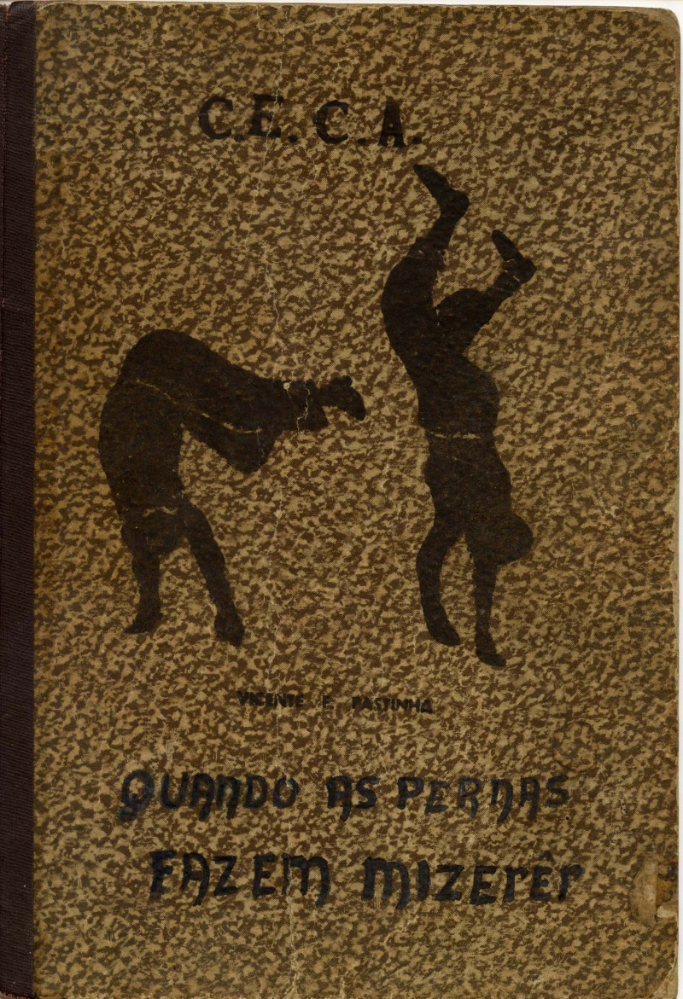

Наследие Паштиньи
Наконец-то я закончил перевод этой книги. Чему очень рад. Дело в том, что о капоэйре написано много книг, но большинство из них пустопорожние, где повторяются одни и те же факты, домыслы, стереотипы, а книги действительно стоящие — большая редкость. О том, чтобы такие книги были на русском… о чем здесь говорить: плюс одна вечная книга капоэйры.

«Наследие Паштиньи» — это уникальная книга, впрочем, как и другие работы Деканио. И, хотя в книге раскрывается наследие величайшего мастера капоэйры Ангола, она будет интересна не только тем, кто практикует Анголу, но и всем другим капоэйристам, независимо от стиля и школы, потому что это книга о капоэйре в целом.Ссылка на скачивание книги:«Наследие Паштиньи».